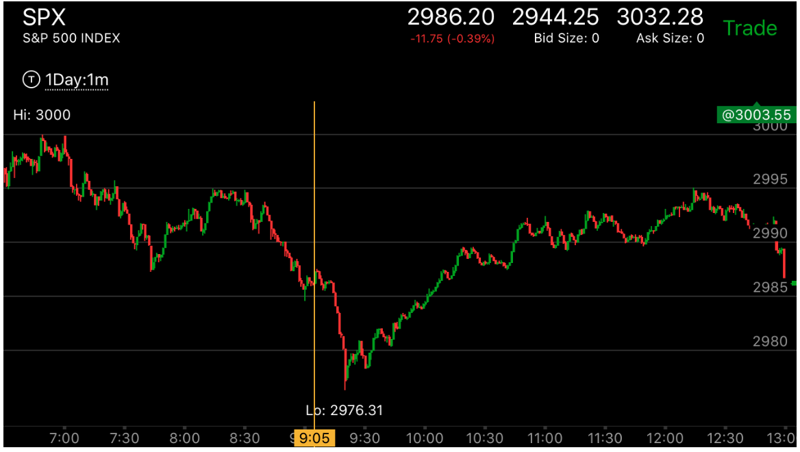
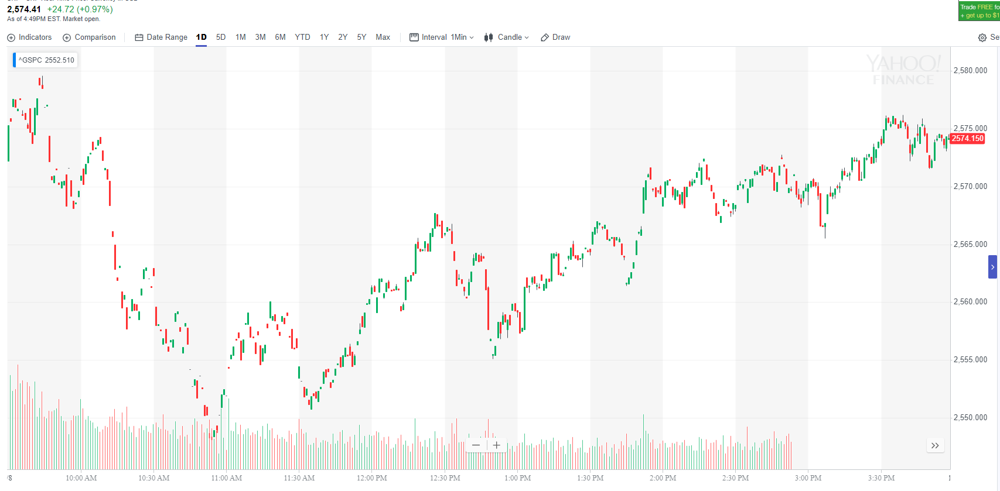

大幅拉回走势
- 以上涨为例，上涨过程当中，不断的拉回，每次拉回低点都比前一次高，但是在某个点，它拉回的低点低于前面的低点，
然后再次上涨，这个上涨会再次创走势新高。这个新高一旦结束，取决于更大的趋势和具体的走势，大盘会要么大幅回调，要么反转。
如果大幅回调，那么它回调的位置会低于前面回调的低点。下跌的走势也有同样的分析。
- 拉回的时候，是否出现两段走势，非常重要，如果拉回后，出现了两段走势，那么再次开始上涨，就按照一个新的走势开始了。
而不能按照相对弱势来判断。
- 下跌也有类似的走势
下跌中的大幅拉回走势
上涨中的大幅拉回走势
拉回后出现两段走势
拉回后出现两段走势
TOP

图示：12:00立刻拉回，幅度很大。这个本身说明了，它不是顶部，因为
它相对很弱。它走平后，在12：10再次下跌，虽然速度比较慢，但是幅度超过了第一浪，而且在底部走平几分钟。
这样，它本身形成了一个两段走势。再次上涨的时候，它应该重新计算。它出现了冲高，走平，再次冲高，然后大幅上涨，
创新高后，12:45走平时间低于12：20和12：30的走平，这样是相对弱势，它填补真空后，再次上涨。


图示：开盘后，第一分钟，上涨幅度很大。快速拉回后，再次回来。
但是没有加速，而是走平，然后缓慢上涨。这个应该得到两点结论，第一浪的幅度很大。它的顶部走平20分钟。
未来一定要超过20分钟才算反转。它再次冲高，立刻拉回，然后再次加速上涨。但是它在顶部只停留了10分钟，就下来。
说明是相对弱势。它下来后，走出一个两段走势。这个两段走势，反转了后面两个两段走势，
但是无法反转第一个两段走势。后面的两段走势是指6：55的上冲后，尖锐拉回，7：00再次上冲，走平。这个两段走势。
但是开盘的两段就无法反转了。因为是相对开盘的上涨，是相对弱势。它下跌形成两段后，再次上涨。这个应该
重新计算两段上涨。另外看开盘前，它其实没有一个上涨浪，而是走平很久。这个就形成了很坚实的上涨基础。不会反转。
下跌中的大幅拉回走势
TOP

图示：
7：20新低后，反弹幅度很大。几乎返回原位，7：40再次快速下跌，再创新低。这次下跌分为几段走势，最后一段最强。
而8：10的下跌和7：10的下跌相比，它虽然都是立刻反弹，但是反弹幅度不如7：10的大，而且再次拉回，形成双底，显得更弱。
这样就反转了。回头看，它的上涨没有什么阻碍。而且在高点停留时间很短，所以一定会越过高点创新高。

图示：7:00从2665下跌的时候，它创了新低，从2640大幅反弹，几乎回到了原位。从下跌最高点算起，
它的低点应该是比2640低10个点。它在2630出现了加速下跌。这样它一定会反弹回到2670以上的。

图示：大盘处于跌势，它不断的下跌。到了7：40，它出现了一个两段上涨，
拉回幅度高于前面。但是它本身也形成了一个叠加走势。继续大跌。

图示：10：00它大幅反弹，反弹高度高于前面。这个反弹本身就是一个两段走势，
在高点停留很短时间，然后大幅下跌。形成了一个5浪下跌。然后反转。一直反弹到了收盘。
上涨中的大幅拉回走势
TOP

图示：7：40回调低于前面的回调低点，它开始缓慢的上涨，一定会创新高。
它在7：10的高点是走平4分钟，而后面的高点，在高点时间很短，所以不会反转。只会填补真空，或者形成跨越走势。
继续上涨。

图示：8：20创新高，它立刻拉回，这个冲锋，和8：00的走势形成了两段走势。
这个走势其实是一个在底部长时间筑底的过程，它每次到了新高，立刻拉回，然后不断走低，回到原点。显得很弱。
直到最后才大幅上涨，不会再回来了。